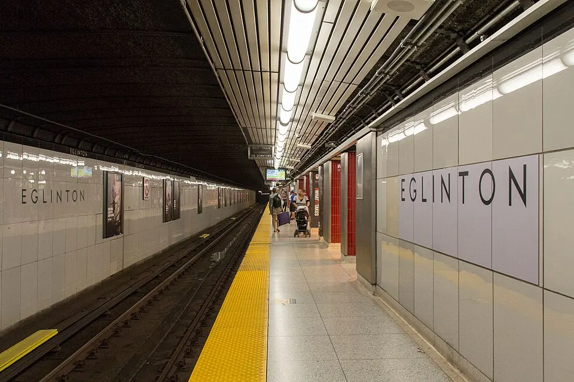

Signal
SignalStation atlas / Eglinton
Station history
Eglinton


Station history
The first Yonge subway ended at the former Eglinton streetcar facility. A large bus terminal linked the new railway to neighbourhoods farther north.
With the extension to York Mills carrying passengers, Eglinton became a through station.
Crews completed excavation below the existing subway structure, underpinning Line 1 to make space for the lower LRT platforms.
Introductory service on Line 5 added an east–west light rail connection beneath Yonge and Eglinton.